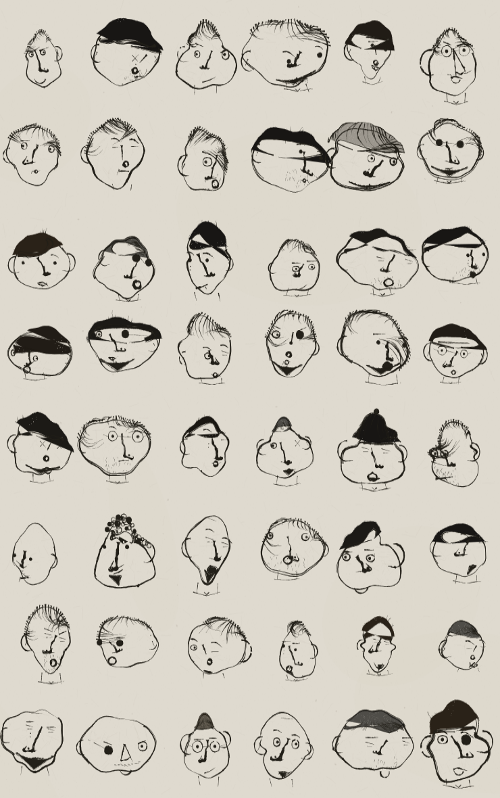
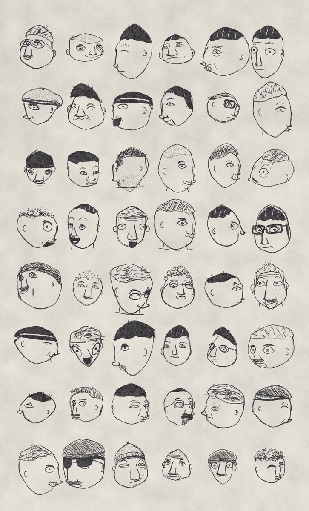
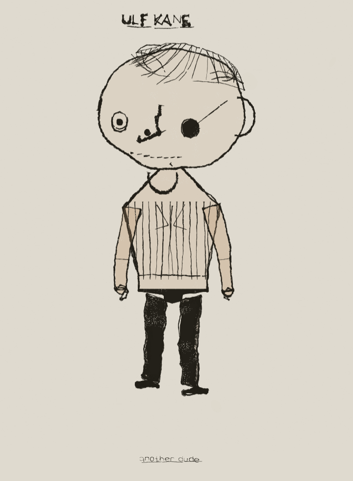
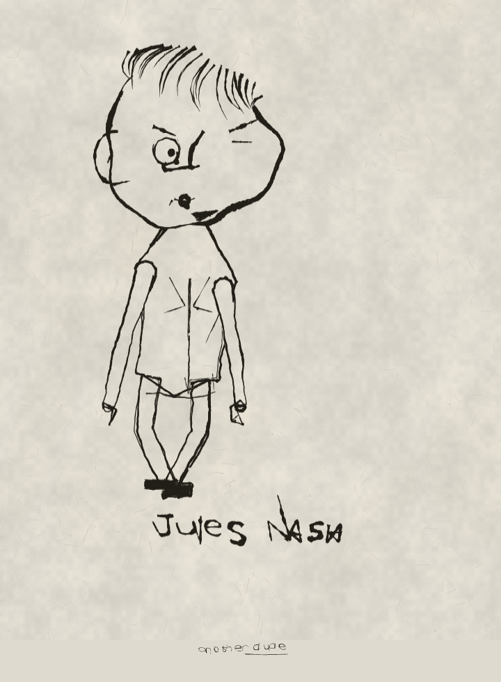
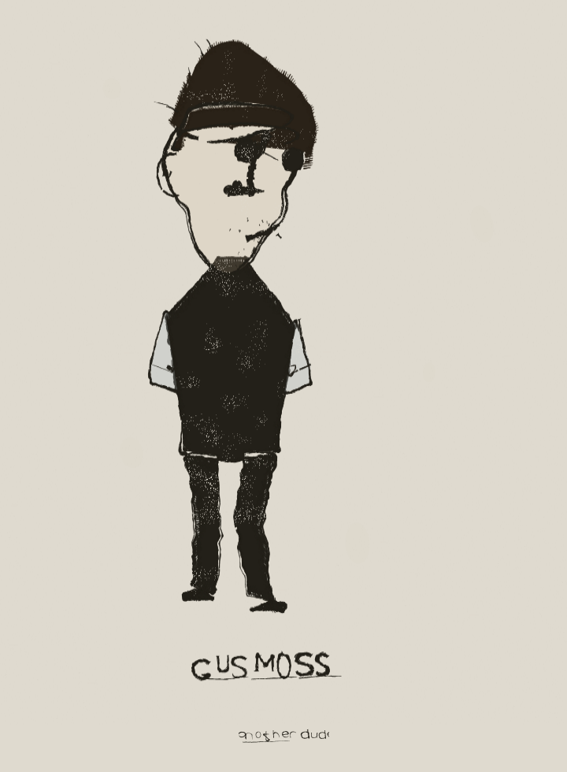
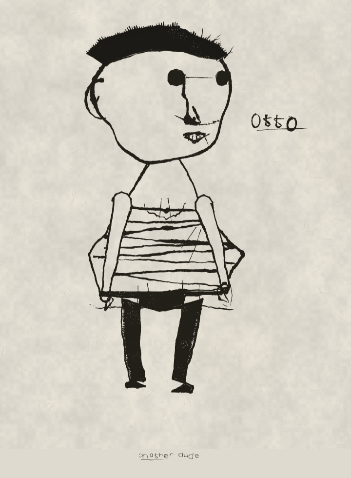
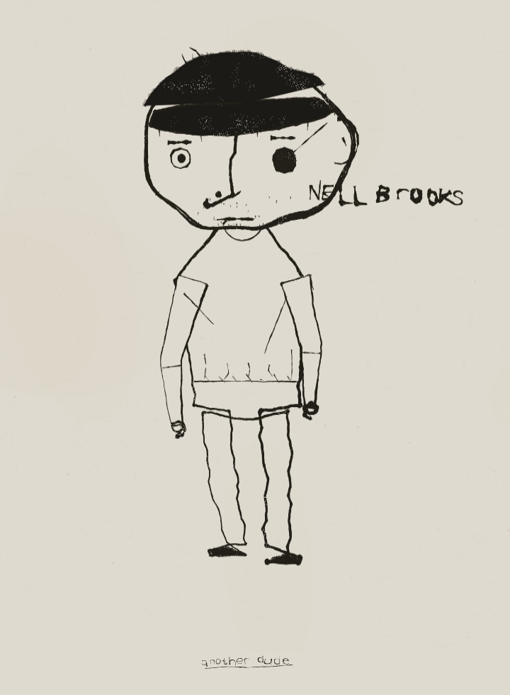
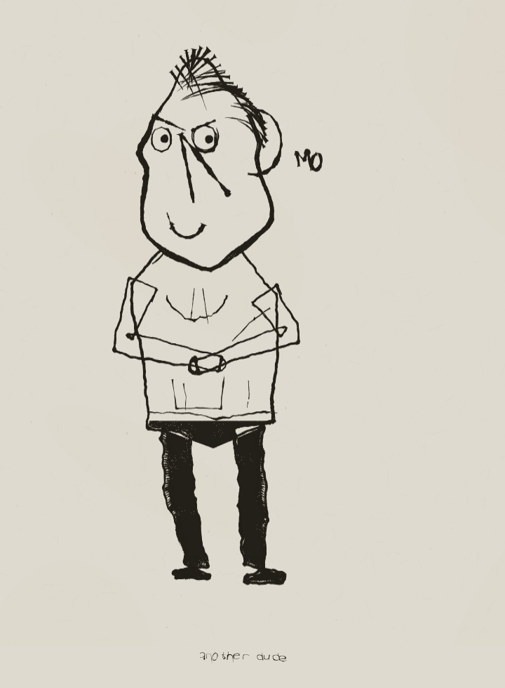
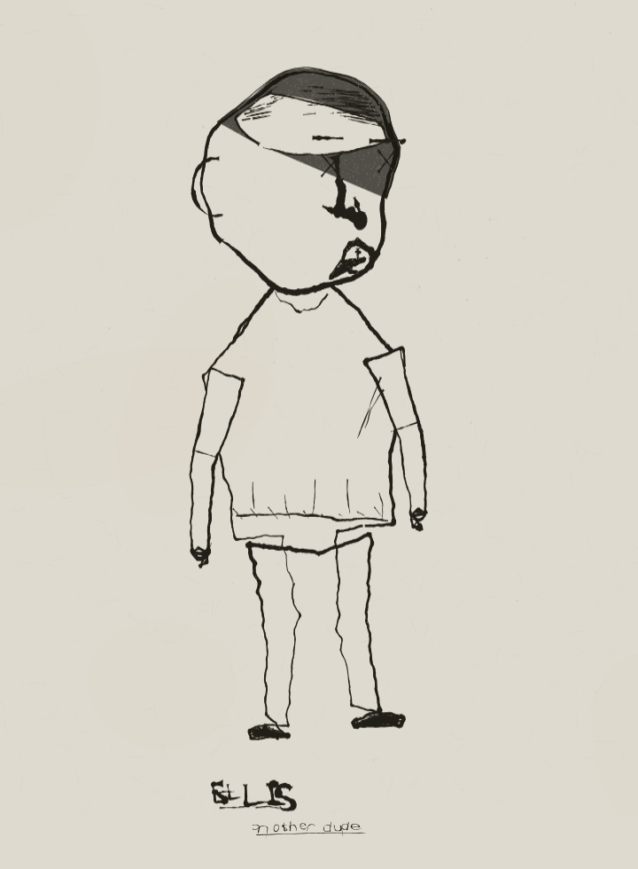
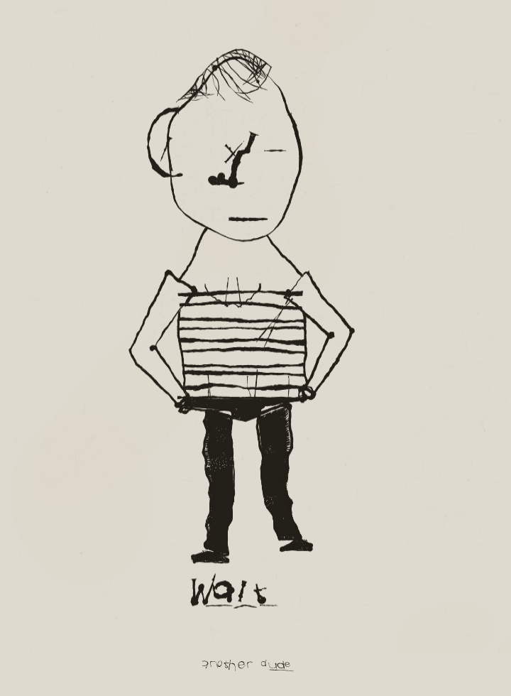

a dude — progress
Canvas 2D. One dude per click, drawn on a hidden 3D skull. The bar is Mannay's plates in refs/. Nobody grades their own work here: every round is judged by critics with fresh context who are shown the sheets unlabelled and asked which they'd rather look at.
Plate mode — like for like
A sheet is only fairly judged against a sheet. index.html?plate=1 renders 48 heads on one page in the same format as the reference plates, so the blind A/B is honest. Ours left, Mannay right.

?plate=1&s=2026
Full dudes








What the critics kept saying
Three rounds of blind A/B against the plates. Every round they picked ours out, and mostly for the same reasons. Those reasons are the changelog.
“Zero pressure modulation. Every stroke is the same width from entry to exit.”
Said in three separate rounds, and correct all three times. The pressure noise had a wavelength longer than most strokes, so each line drew one sample of it and came out at a constant width. The wave is now scaled to the stroke — one to five swells along it whatever its length — so a contour thins through a straight and bears down through a turn. Underneath that, a stroke is a filled variable-width ribbon at full opacity: a wet core plus loose filaments down each flank that catch and drop out on their own. The old strokes were butt-capped segments at partial alpha, which is why everything read grey and seamed.
“The contour is one uninterrupted noise-perturbed circle, which is why the faces read as stickers rather than heads.”
A head is now a cranium drawn over and a jaw drawn under. They overshoot and cross where they meet, the jaw carries about 30% more weight, and one cheek gets restated on one side only.
“Hair is a shape pasted on. The head reads whole underneath it.”
Hair masses are built from two edges: a hairline pinned across the face, and the skull's own silhouette above it, pushed outward by the thickness of the hair. The head outline can no longer show through, and the mass wraps whatever the skull does under yaw. The outer edge is made of stroke ends rather than a filled polygon; the hairline stays a clean cut, because a hairline is a decision.
“Every skull is widest at the same relative height.”
The outline used to be a convex hull, which can only ever be an egg. It is now the radial extent of the projected skull plus a per-seed lump profile on integer harmonics — so it can dent inward — with an optional brow ridge and one flat facet. Skulls pick from six archetypes: round, long-jaw, tall cranium, block, pear, egg. Silhouette is all that reads at grid scale.
“Short hairs of identical length, spacing and weight radiating perpendicular to the outline — including where no hair grows.”
Strays now come in one to three tufts, at wildly mixed lengths, with curl, and only on some heads.
“The nose is one stamped glyph.”
It is built on the face's projected vertical axis rather than raw 3D points, so it rides a turn instead of walking across the cheek. One unbroken run from between the brows to the tip that breaks direction once at the bridge, tilts a few degrees off the head axis, turns under into the nostril, and carries up to 1.9× the weight of anything else on the face.
“Repeated letters are identical. Fatal. A hand never repeats.”
Each glyph is now sheared, unevenly squashed and control-point jittered, so the two O's in a name never superimpose. The baseline drifts and does not come back, the end of a word gets cramped and drops, strokes overshoot their joins, case is mixed, and the underline is a scratch in two or three goes.
“The body is assembled; the head is drawn.”
Gone: trapezoid chassis, ribbon tubes. The figure is one continuous silhouette — neck, shoulders, sides, legs, round the shoes — with the arms as their own shapes laid in front of it, at the same pen weight and the same wobble as the head. Straight runs are subdivided so the pen has somewhere to wander. Cloth has folds at the armpit, gathers above the hem, shadow under it, pocket marks, and hands.
“The paper is a single flat RGB value with no fibre or tooth.”
Blooms, then fibre lying in the sheet, then tooth, then the odd fleck of pulp. And the tooth that shows through a black mass now appears in patches where the sheet rides high, not as an even sprinkle.
“Zero blots, zero crossed-and-continued strokes, zero corrections across ninety-six faces.”
The pen now runs past a corner instead of stopping on it, and drops the occasional blot where it sat too long.
“The black masses carry an identical erosion band at the edge — same grain on the smallest head as the largest.”
The screen-space tooth filter is dialled right back. The erosion that reads as ink lives in the mass itself, at the scale of the mark.
“Limb edges are machine-parallel at constant width — a stroked path, not two hand-drawn lines.”
Correct, and the fix is structural: the two edges of a limb are no longer one centreline offset both ways. Each carries its own noise, so they wobble and taper independently. Hems are drawn arcs and collars are drawn arcs; there is no ruled line and no compass ellipse left on the figure.
“The colour alone announces two different tools.”
Gone. The reference plates have no fill; value comes from hatching and solid black. And anywhere paper is painted over the drawing to occlude it, the fibre is restamped on top — otherwise the figure reads as a cut-out pasted on the sheet.
“Every face is a white oval with the same hat of ink; the sheet reads as one drawing repeated forty-eight times.”
The last and largest note. Hair is no longer a filled black shape with a roughened boundary on every head. A large share of styles now lay 30–55 discrete strokes from a parting, thick where they leave the scalp and tapering to nothing at the tip, sweeping with the growth direction and starting slightly outside the silhouette so they break it irregularly. Roughly a third of heads now carry no black at all, which is what gives the sheet its rhythm of dark and light.
What the critics have stopped saying
The lettering. Asked to look hard at repeated letters inside a single name, the last critic zoomed in and reported: “In OTTO the first O is broad and heavy with a top-left overshoot spur, the second narrower, lighter, pointed at the apex… In GUS MOSS all three S's differ. Genuine per-glyph variation.” They called it the strongest part of the page. That one is won.
Still open
- Every round, the critics still identify our sheets and still rank both Mannay plates above them. The gap has narrowed — one round put ours above one of his — but he has not been beaten.
- The standing note is that features sit in the head on his sheets and on it on ours: eyes built as sockets with a lid clipping the iris and a brow that relates to that lid, rather than a ring with a pupil in it.
- Hatched hair is lighter than the reference's.
- Nose variety: the long one still dominates.
- The body has no reference plate, so it is judged only on whether it looks like the same hand as the head above it.